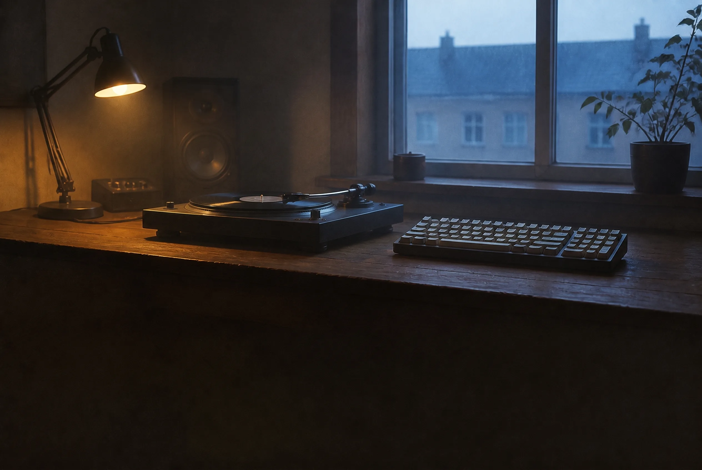

developer in Seoul · automating with AI · learning to mix
Music
The crate runs 432 tracks deep — 128 BPM, minor keys, Black Book heavy. on air is top right.
Code
Building with AI in the loop — right now, SceneBoard, structured video production for macOS.
Say hi
I build apps, and I hand whatever I can to AI agents — this page and the film above were shipped that way. Right now I'm building SceneBoard, a macOS tool for structured AI video production.
Away from the keyboard I'm learning to DJ — digging first. The crate is 432 tracks deep and plays from the on air switch, top right. Live sets come next.